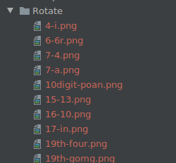

对OCR模型CNN-CTC的鲁棒性评测

概述
本教程主要演示利用自然扰动serving服务，对OCR模型CNN-CTC做一个简单的鲁棒性评测。先基于serving生成多种自然扰动样本数据集，然后根据CNN-CTC模型在自然扰动样本数据集上的表现来评估模型的鲁棒性。
环境要求
硬件
Ascend或GPU处理器搭建硬件环境。
依赖
MindSpore-Serving >= 1.6.0
MindArmour
脚本说明
代码结构
|-- natural_robustness
|-- serving # 提供自然扰动样本生成的serving服务
|-- ocr_evaluate
|-- cnn_ctc # cnn_ctc模型目录：模型的训练、推理、前后处理
|-- data # 存储实验分析数据
|-- default_config.yaml # 参数配置
|-- generate_adv_samples.py # 用于生成自然扰动样本
|-- eval_and_save.py # cnn_ctc在扰动样本上推理，并保存推理结果
|-- analyse.py # 分析cnn_ctc模型的鲁棒性
脚本参数
在default_config.yaml中可以同时配置训练参数、推理参数、鲁棒性评测参数。这里我们重点关注在评测过程中使用到的参数，以及需要用户配置的参数，其余参数说明参考CNN-CTC教程。
--TEST_DATASET_PATH：测试数据集路径。--CHECKPOINT_PATH：checkpoint路径。--ADV_TEST_DATASET_PATH：扰动样本数据集路径。--IS_ADV：是否使用扰动样本进行测试。
模型与数据
被评测的模型为基于MindSpore实现的OCR模型CNN-CTC，该模型主要针对场景文字识别（Scene Text Recognition）任务，用CNN模型提取特征，用CTC（Connectionist temporal classification）预测输出序列。
论文： J. Baek, G. Kim, J. Lee, S. Park, D. Han, S. Yun, S. J. Oh, and H. Lee, “What is wrong with scene text recognition model comparisons? dataset and model analysis,” ArXiv, vol. abs/1904.01906, 2019.
数据处理与模型训练参考CNN-CTC教程。评测任务需基于该教程获得预处理后的数据集和checkpoint模型文件。
预处理后的数据集为.lmdb格式，以键值对方式存储：
label-%09d：图片的真实标签
image-%09d：原始图片数据
num-samples：lmdb数据集中的样本数量
其中，%09d为：长度为9的数字串。形如：label-000000001。
基于自然扰动serving生成评测数据集
启动自然扰动serving服务。具体说明参考：自然扰动样本生成serving服务
cd serving/server/ python serving_server.py
基于serving服务，生成测评数据集。
在default_config.yaml中配置原来测试样本数据路径
TEST_DATASET_PATH和生成扰动样本数据集路径ADV_TEST_DATASET_PATH。例如：TEST_DATASET_PATH: "/opt/dataset/CNNCTC_data/MJ-ST-IIIT/IIIT5k_3000" ADV_TEST_DATASET_PATH: "/home/mindarmour/examples/natural_robustness/ocr_evaluate/data"
核心代码说明：
配置扰动方法，目前可选的扰动方法及参数配置参考image transform methods。下面是一个配置例子。
PerturbConfig = [ {"method": "Contrast", "params": {"alpha": 1.5, "beta": 0}}, {"method": "GaussianBlur", "params": {"ksize": 5}}, {"method": "SaltAndPepperNoise", "params": {"factor": 0.05}}, {"method": "Translate", "params": {"x_bias": 0.1, "y_bias": -0.1}}, {"method": "Scale", "params": {"factor_x": 0.8, "factor_y": 0.8}}, {"method": "Shear", "params": {"factor": 1.5, "direction": "horizontal"}}, {"method": "Rotate", "params": {"angle": 30}}, {"method": "MotionBlur", "params": {"degree": 5, "angle": 45}}, {"method": "GradientBlur", "params": {"point": [50, 100], "kernel_num": 3, "center": True}}, {"method": "GradientLuminance", "params": {"color_start": [255, 255, 255], "color_end": [0, 0, 0], "start_point": [100, 150], "scope": 0.3, "bright_rate": 0.3, "pattern": "light", "mode": "circle"}}, {"method": "GradientLuminance", "params": {"color_start": [255, 255, 255], "color_end": [0, 0, 0], "start_point": [150, 200], "scope": 0.3, "pattern": "light", "mode": "horizontal"}}, {"method": "GradientLuminance", "params": {"color_start": [255, 255, 255], "color_end": [0, 0, 0], "start_point": [150, 200], "scope": 0.3, "pattern": "light", "mode": "vertical"}}, {"method": "Curve", "params": {"curves": 0.5, "depth": 3, "mode": "vertical"}}, {"method": "Perspective", "params": {"ori_pos": [[0, 0], [0, 800], [800, 0], [800, 800]], "dst_pos": [[10, 0], [0, 800], [790, 0], [800, 800]]}}, ]
准备需要扰动的数据。
instances = [] methods_number = 1 outputs_number = 2 perturb_config = json.dumps(perturb_config) env = lmdb.open(lmdb_paths, max_readers=32, readonly=True, lock=False, readahead=False, meminit=False) if not env: print('cannot create lmdb from %s' % (lmdb_paths)) sys.exit(0) with env.begin(write=False) as txn: n_samples = int(txn.get('num-samples'.encode())) # Filtering filtered_labels = [] filtered_index_list = [] for index in range(n_samples): index += 1 # lmdb starts with 1 label_key = 'label-%09d'.encode() % index label = txn.get(label_key).decode('utf-8') if len(label) > max_len: continue illegal_sample = False for char_item in label.lower(): if char_item not in config.CHARACTER: illegal_sample = True break if illegal_sample: continue filtered_labels.append(label) filtered_index_list.append(index) img_key = 'image-%09d'.encode() % index imgbuf = txn.get(img_key) instances.append({"img": imgbuf, 'perturb_config': perturb_config, "methods_number": methods_number, "outputs_number": outputs_number}) print(f'num of samples in IIIT daaset: {len(filtered_index_list)}')
请求自然扰动serving服务，并保存serving返回的数据。
ip = '0.0.0.0:8888' client = Client(ip, "perturbation", "natural_perturbation") start_time = time.time() result = client.infer(instances) end_time = time.time() print('generated natural perturbs images cost: ', end_time - start_time) env_save = lmdb.open(lmdb_save_path, map_size=1099511627776) txn = env.begin(write=False) with env_save.begin(write=True) as txn_save: new_index = 1 for i, index in enumerate(filtered_index_list): try: file_names = result[i]['file_names'].split(';') except: print('index: ', index) print(result[i]) length = result[i]['file_length'].tolist() before = 0 label = filtered_labels[i] label = label.encode() img_key = 'image-%09d'.encode() % index ori_img = txn.get(img_key) names_dict = result[i]['names_dict'] names_dict = json.loads(names_dict) for name, leng in zip(file_names, length): label_key = 'label-%09d'.encode() % new_index txn_save.put(label_key, label) img_key = 'image-%09d'.encode() % new_index adv_img = result[i]['results'] adv_img = adv_img[before:before + leng] adv_img_key = 'adv_image-%09d'.encode() % new_index txn_save.put(img_key, ori_img) txn_save.put(adv_img_key, adv_img) adv_info_key = 'adv_info-%09d'.encode() % new_index adv_info = json.dumps(names_dict[name]).encode() txn_save.put(adv_info_key, adv_info) before = before + leng new_index += 1 xn_save.put("num-samples".encode(),str(new_index - 1).encode()) env.close()
执行自然扰动样本生成脚本：
python generate_adv_samples.py生成的自然扰动数据为.lmdb格式，包含下列键值对数据项：
label-%09d：图片的真实标签
image-%09d：原始图片数据
adv_image-%09d：生成的扰动图片数据
adv_info-%09d：扰动信息，包含扰动方法和参数
num-samples：lmdb数据集中的样本数量
CNN-CTC模型在生成扰动数据集上推理
在default_config.yaml中将测试数据集路径
TEST_DATASET_PATH设置成和生成扰动样本数据集路径ADV_TEST_DATASET_PATH一样的。例如：TEST_DATASET_PATH: "/home/mindarmour/examples/natural_robustness/ocr_evaluate/data" ADV_TEST_DATASET_PATH: "/home/mindarmour/examples/natural_robustness/ocr_evaluate/data"
核心脚本说明
加载模型和数据集
ds = test_dataset_creator(is_adv=config.IS_ADV) net = CNNCTC(config.NUM_CLASS, config.HIDDEN_SIZE, config.FINAL_FEATURE_WIDTH) ckpt_path = config.CHECKPOINT_PATH param_dict = load_checkpoint(ckpt_path) load_param_into_net(net, param_dict) print('parameters loaded! from: ', ckpt_path)
推理并保存模型对于原始样本和扰动样本的推理结果。
env_save = lmdb.open(lmdb_save_path, map_size=1099511627776) with env_save.begin(write=True) as txn_save: for data in ds.create_tuple_iterator(): img, _, text, _, length = data img_tensor = Tensor(img, mstype.float32) model_predict = net(img_tensor) model_predict = np.squeeze(model_predict.asnumpy()) preds_size = np.array([model_predict.shape[1]] * config.TEST_BATCH_SIZE) preds_index = np.argmax(model_predict, 2) preds_index = np.reshape(preds_index, [-1]) preds_str = converter.decode(preds_index, preds_size) label_str = converter.reverse_encode(text.asnumpy(), length.asnumpy()) print("Prediction samples: \n", preds_str[:5]) print("Ground truth: \n", label_str[:5]) for pred, label in zip(preds_str, label_str): if pred == label: correct_count += 1 count += 1 if config.IS_ADV: pred_key = 'adv_pred-%09d'.encode() % count else: pred_key = 'pred-%09d'.encode() % count txn_save.put(pred_key, pred.encode()) accuracy = correct_count / count
执行eval_and_save.py脚本:
python eval_and_save.pyCNN-CTC模型在生成的自然扰动数据集上进行推理，并在
ADV_TEST_DATASET_PATH中保存模型对于每个样本的推理结果。数据集中新增键值对数据项：
pred-%09d：模型对原始图片数据的预测结果
adv_pred-%09d：模型对扰动图片数据的预测结果
模型对于真实样本的预测结果：
Prediction samples: ['private', 'private', 'parking', 'parking', 'salutes'] Ground truth: ['private', 'private', 'parking', 'parking', 'salutes'] Prediction samples: ['venus', 'venus', 'its', 'its', 'the'] Ground truth: ['venus', 'venus', 'its', 'its', 'the'] Prediction samples: ['summer', 'summer', 'joeys', 'joeys', 'think'] Ground truth: ['summer', 'summer', 'joes', 'joes', 'think'] ...
模型对于自然扰动样本的预测结果：
Prediction samples: ['private', 'private', 'parking', 'parking', 'salutes'] Ground truth: ['private', 'private', 'parking', 'parking', 'salutes'] Prediction samples: ['dams', 'vares', 'its', 'its', 'the'] Ground truth: ['venus', 'venus', 'its', 'its', 'the'] Prediction samples: ['sune', 'summer', '', 'joeys', 'think'] Ground truth: ['summer', 'summer', 'joes', 'joes', 'think'] ...
模型在原始测试数据集和自然扰动数据集上的准确率：
num of samples in IIIT dataset: 5952 Accuracy of benign sample: 0.8546195652173914 Accuracy of perturbed sample: 0.6126019021739131
鲁棒性分析
根据CNN-CTC模型在扰动数据集上的表现进行统计分析。运行脚本analyse.py。
python analyse.py
分析结果：
Number of samples in analyse dataset: 5952
Accuracy of original dataset: 0.46127717391304346
Accuracy of adversarial dataset: 0.6126019021739131
Number of samples correctly predicted in original dataset but wrong in adversarial dataset: 832
Number of samples both wrong predicted in original and adversarial dataset: 1449
------------------------------------------------------------------------------
Method Shear
Number of perturb samples: 442
Number of wrong predicted: 351
Number of correctly predicted in origin dataset but wrong in adversarial: 153
Number of both wrong predicted in origin and adversarial dataset: 198
------------------------------------------------------------------------------
Method Contrast
Number of perturb samples: 387
Number of wrong predicted: 57
Number of correctly predicted in origin dataset but wrong in adversarial: 8
Number of both wrong predicted in origin and adversarial dataset: 49
------------------------------------------------------------------------------
Method GaussianBlur
Number of perturb samples: 436
Number of wrong predicted: 181
Number of correctly predicted in origin dataset but wrong in adversarial: 71
Number of both wrong predicted in origin and adversarial dataset: 110
------------------------------------------------------------------------------
Method MotionBlur
Number of perturb samples: 458
Number of wrong predicted: 215
Number of correctly predicted in origin dataset but wrong in adversarial: 92
Number of both wrong predicted in origin and adversarial dataset: 123
------------------------------------------------------------------------------
Method GradientLuminance
Number of perturb samples: 1243
Number of wrong predicted: 154
Number of correctly predicted in origin dataset but wrong in adversarial: 4
Number of both wrong predicted in origin and adversarial dataset: 150
------------------------------------------------------------------------------
Method Rotate
Number of perturb samples: 405
Number of wrong predicted: 298
Number of correctly predicted in origin dataset but wrong in adversarial: 136
Number of both wrong predicted in origin and adversarial dataset: 162
------------------------------------------------------------------------------
Method SaltAndPepperNoise
Number of perturb samples: 413
Number of wrong predicted: 116
Number of correctly predicted in origin dataset but wrong in adversarial: 29
Number of both wrong predicted in origin and adversarial dataset: 87
------------------------------------------------------------------------------
Method Translate
Number of perturb samples: 419
Number of wrong predicted: 159
Number of correctly predicted in origin dataset but wrong in adversarial: 57
Number of both wrong predicted in origin and adversarial dataset: 102
------------------------------------------------------------------------------
Method GradientBlur
Number of perturb samples: 440
Number of wrong predicted: 92
Number of correctly predicted in origin dataset but wrong in adversarial: 26
Number of both wrong predicted in origin and adversarial dataset: 66
------------------------------------------------------------------------------
Method Perspective
Number of perturb samples: 401
Number of wrong predicted: 181
Number of correctly predicted in origin dataset but wrong in adversarial: 75
Number of both wrong predicted in origin and adversarial dataset: 106
------------------------------------------------------------------------------
Method Curve
Number of perturb samples: 410
Number of wrong predicted: 361
Number of correctly predicted in origin dataset but wrong in adversarial: 162
Number of both wrong predicted in origin and adversarial dataset: 199
------------------------------------------------------------------------------
Method Scale
Number of perturb samples: 434
Number of wrong predicted: 116
Number of correctly predicted in origin dataset but wrong in adversarial: 19
Number of both wrong predicted in origin and adversarial dataset: 97
------------------------------------------------------------------------------
分析结果包含：
评测的样本数量：5888
CNN-CTC模型在原数据集上的准确率：85.4%
CNN-CTC模型在扰动数据集上的准确率：57.2%
在原图上预测正确，扰动后图片预测错误的 样本数量：1736
在原图和扰动后图片上均预测错误的样本数量：782
对于每一个扰动方法，包含样本数量、扰动样本预测错误的数量、原样本预测正确扰动后预测错误的数量、原样本和扰动样本均预测错误的数量。
如果模型对某扰动方法扰动后的图片预测错误率较高，则说明CNN-CTC模型对于该方法鲁棒性较差，建议针对性提升，如Rotate、Curve、MotionBlur和Shear这几种扰动方法，大部分扰动后的图片都预测错误，建议进一步分析。
同时在ADV_TEST_DATASET_PATH路径下生成3个文件夹：
adv_wrong_pred # 模型对于扰动后图片分类错误的数据集
ori_corret_adv_wrong_pred # 模型对于原图分类正确但扰动后图片分类错误的数据集
ori_wrong_adv_wrong_pred # 模型对于原图分类和扰动后图片均分类错误的数据集
每个文件夹均按照扰动方法分类:

每张图片的命名格式：真值-预测值.png，如下图：

存储的图片可供进一步分析，是模型质量问题、图片质量问题、还是扰动方法影响图片语义从而导致预测错误。